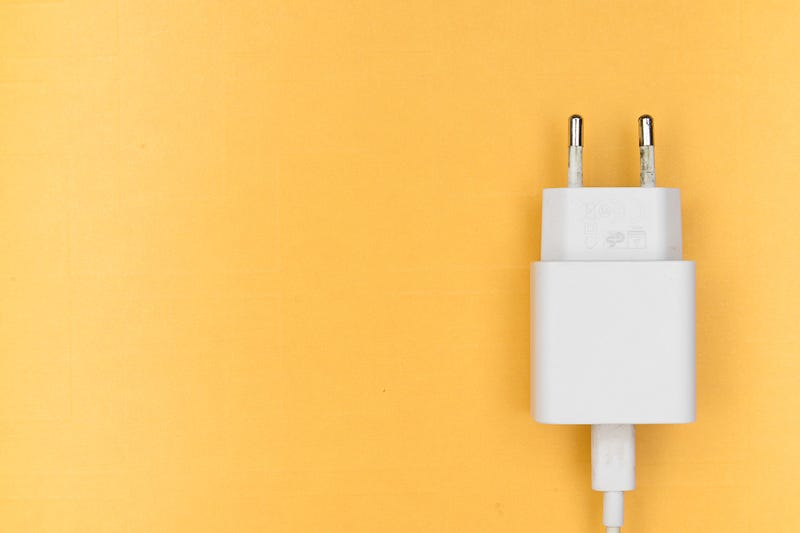
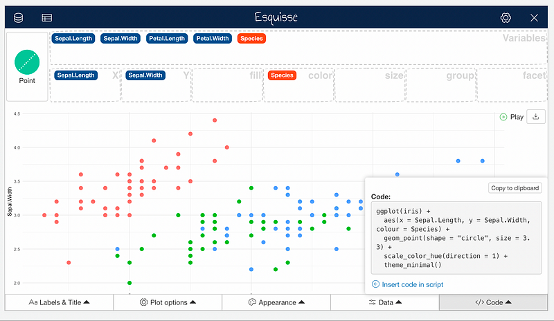
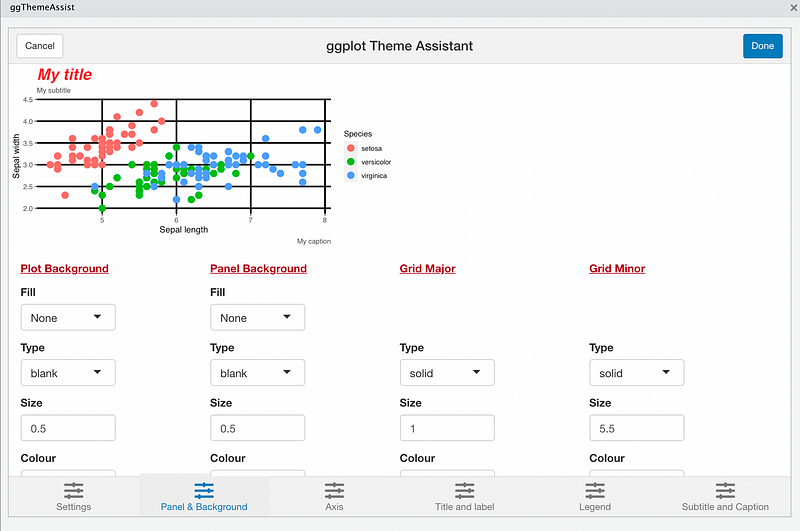
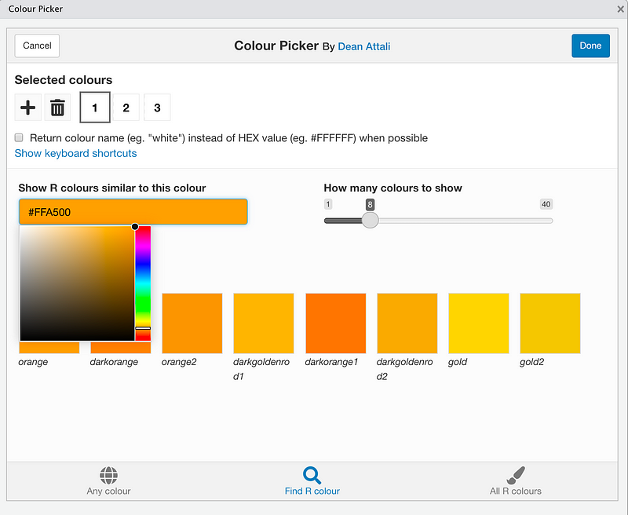
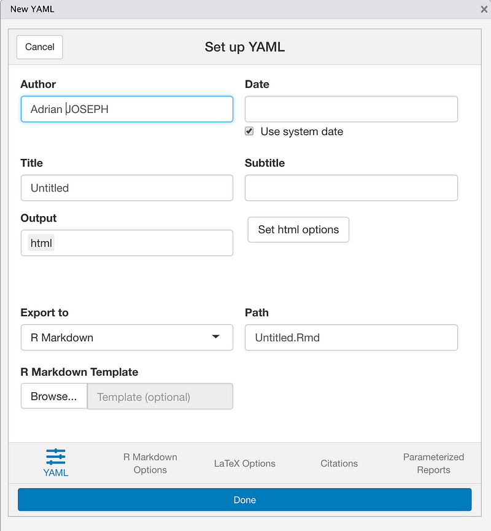
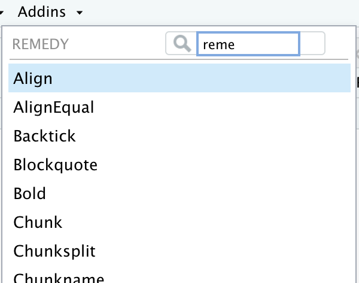
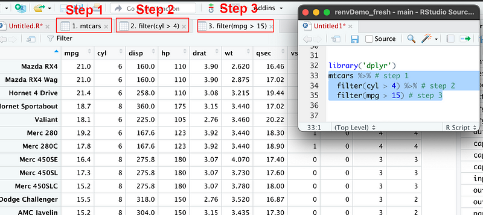
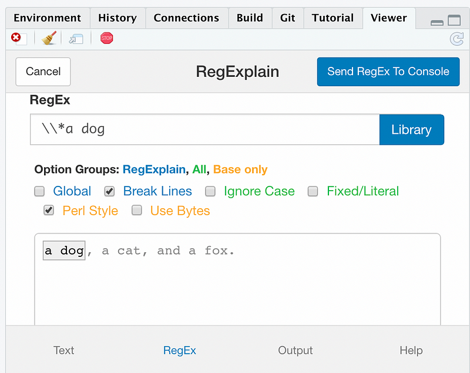
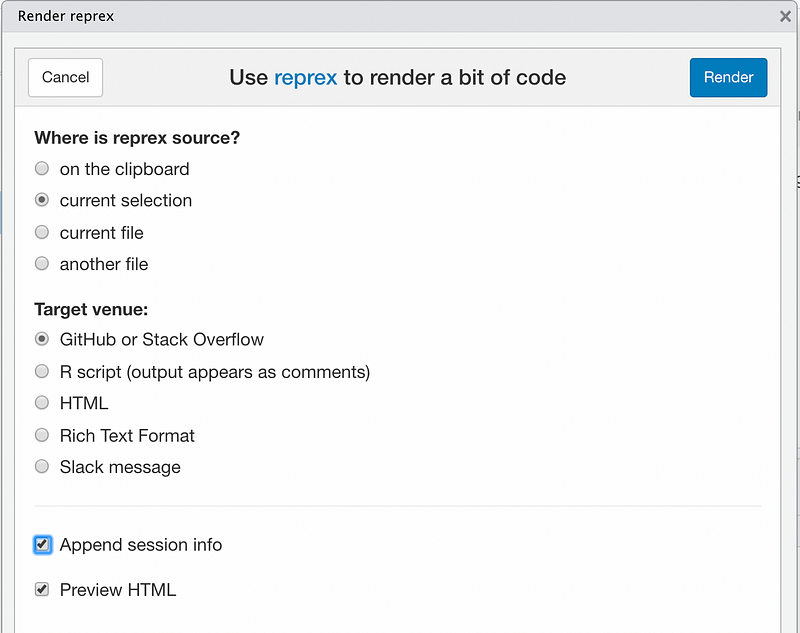

A few years ago, RStudio introduced addins. Addins extend R and RStudio functionalities. They can either add entirely new features, or make the use of existing features easier.
RStudio allows the community to develop addins. And the community loves them. We now have countless addins. Some are great, other not so much.
Addins are easily installed (and developed). They are nothing more than R packages that use an API provided by RStudio. To use them you only need to install the addin as an R package and to to click the Addins menu. Simple as that. You do not even need to restart RStudio.
A while ago I wrote a story about my favourite R packages. Today, I’ll do the same with addins. But before we go any deeper: what makes an addins great? I believe that great addins provides easy access to routine operations. The important word is “operations”, plural. Some addins in, for example golem, do not do that; they only replicate the behaviour of a single line of code. This is not to say that golem is not good. It is one of my favourite packages. What I mean is that the addin is not make my work any faster. I can just as easily execute that line of code from the console. I don’t need the addin. Hence, you won’t find this kind of addins in this list.
ggplot and graphics
Addins are great when coupled with interactive, visual tasks. This is why ggplot has some great addins.
esquisse
esquisse is a fantastic little tool to build ggplots interactively. We all love ggplot, but it is hard to remember all the options for all the types of charts. esquisse allows you to interactively create your plot, then save the ggplot code to the source file. It is incredibly easy to play around with grouping, filling, and with different kinds of plots.

ggThemeAssist
esquisse can only take you so far in your plot needs. ggThemeAssist picks it up where esquisse left it, so that you can really fine tune your plot. You start from some ggplot code, like the one produced by esquisse, and then you dive into every tiny detail. You can change font size, background colour, labels and caption, axis layout, etc.

colourpicker
Sometimes you need to use specific colours to fit with your organization’s branding. Or you want to create your own effective and colour-blind safe palette. colourpicker helps you solving these problems. It gives you options to select colours and it then prints to the console the corresponding colour name in the desired format. You can then inject your colours into the chart you produced with esquisse and ggThemeAssist.

R markdown
If you are a data scientist, you are likely writing R markdown reports. RStudio addins can help you to speed up your work.
ymlthis
One of the most tedious parts of writing an R markdown is to write the YAML chunk at the top. It has so many different options to tune, and it can be picky with the formatting. ymlthis allows you to interactively specify all the options you want in your YAML, and then it will create the YAML chunk for you. Do you want a table of content with 2 levels? No problem, just click on the relevant boxes. Do you want to create a PDF, rather than an HTML? Again, just click on the correct box. Done.

remedy
remedy contains shortcuts to all the useful R markdown formatting properties. You can set the headings’ level, create numbered lists or bullet points, etc. The feature I use the most is to select some text, and automatically convert it to a list. No need to manually change and formatting every single line.
A note on gramr. gramr gives you suggestions for your writing, highlighting potentially problematic parts like passive sentences, or adverbs. I think this is a useful addins, and if you want to stay in R is it worth a look. However, if I really need to check my writing, I prefer to pass the text through some more friendly tools, like the Hemingway App.

General coding
ViewPipeSteps
We all know how great dplyr is. The chaining of multiple data processing steps in pipelines with the %>% operator is very neat. However, it is not always easy to debug those pipelines. How can you quickly check what happens at every step? You have to run one line of the pipe, examine the outcome, run the following line, examine the results, and so on until the end of the pipeline. What if you could automate all of this? With ViewPipeSteps you can. All you have to do is to select your entire pipeline, then use the addin. ViewPipeSteps will automatically open the outcome of each step of the pipeline to a new data frame that you can inspect in the RStudio UI.

bracketify
In R, you can access list elements or data.frame columns using the $ operator. However, this is not very readable. With the [[ notation, the line of code will be easier to read because RStusio will highlight it with a different colour. Not only that, but using the [[ notation makes your code more flexible: you can use dynamic referencing to column names or fields. bracketify does only one simple job: it goes over your file and changes all the $ references to the equivalent [[.
datapasta
Have you ever wanted to generate R data from a dataset you copied from somewhere else, for instance a JSON or a Python list? If so, it is likely that you pasted your data to an R file, then manually added commas to separate items, wrapped the whole thing into a c() call, and maybe even formatted the lines to make sure you have each element in a new line. With datapasta you can say goodbye to all of this. Just copy some data to the clipboard, then launch the addin. In seconds, you will be able to automatically generate in a source file the data coming from the clipboard.
regexplain
Working with regex can be a pain, and a lot of trial and error to find the right combination of stuff to get the result you want. Often you might need to use some external regex sandbox to try things out, and then you need to translate the regex to an R-friendly version. With regexplain you can experiment with regex interactively and directly into R. Just start the addin, then try out different regex, and with the flavour of regex that will work with your package or funciton of choice (stringr, grep, gsub, etc.). When you are done, regexplain will write to your source file the exact R command you need to achieve your string manipulation goal.

reprex
If you work on the support side, you know how important it is to get as much information as possible around a failure. You want not only the failing code, but also the environment it runs on. You also want to investigate only the part of the code that is causing the issue, and not with hundreds of lines of code that have nothing to do with the problem. Similarly, if you ask a question on a site like stackoverflow, you want to provide all the information you can, all while using a minimal reproducible example. reprex can ensure this. You can select your minimal example and create a reprex object that contains session information and it is in a format compatible to the service you choose, for instance github o stackoverflow.

styler
Tidying up our code should be part of our daily activities. In some organizations, liniting your code might be required to merge code into a branch. styler can clean up your code for you. With just a couple of clicks you can fix indentations, long lines of code, or comments.
What about you? What are your favourite addins?
Thanks for reading, and remember to follow me to get notified on new stories.